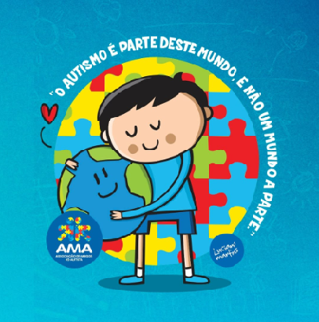

O AMA ou (Associação de Amigos do Autista) na nossa
cidade é como se fosse uma instituição sem fins lucrativos
que foi fundada em 1991, dedicada ao atendimento especializado
de pessoas com Transtorno do Espectro Autista o conhecido (TEA).
A instituição oferece serviços nas áreas de assistêncicial social, educação, saúde e lazer, com o objetivo de promover a inclusão social,
educação especial e saúde, focando no desenvolvimento integral e na inclusão social.
Atualmente, atende cerca de 350 pessoas e suas famílias, promovendo a habilitação e
reabilitação social, além de garantir direitos e acesso a serviços sociassitenciais.